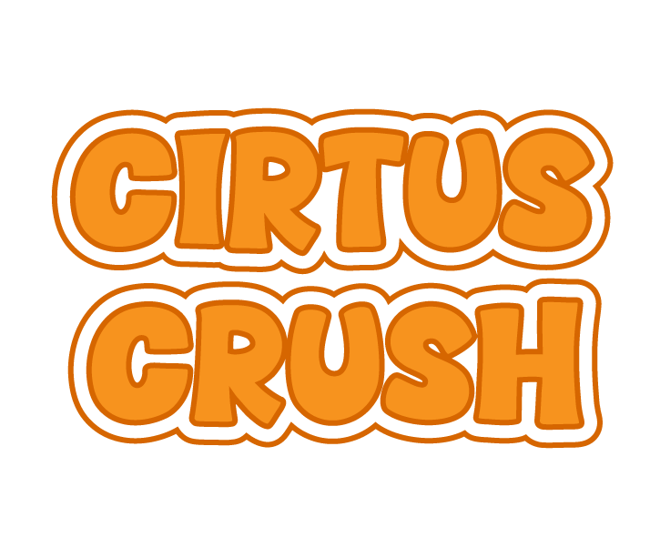

Focus Game

Tap any dots to trace the orange in a calm, repetitive way.
Free Trace
Tap any dot to start tracing.
Trace the Orange
Small repetitive motion, low-pressure focus
Not recording
Transcript
Ready after recording